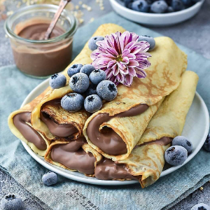

Ingredients
Crepes:
- 1 cup all-purpose flour⠀
- 1/4 tsp. salt
- 1 1/2 cups unflavored soy or almond milk⠀
- 3 tbsp. vegetable oil⠀
- 1 tbsp. maple syrup
- 1 tsp. vanilla extract⠀
- up to 1/3 cup water⠀
Chocolate Pudding
- ¼ cup almond milk (62 g)⠀
- ½ cup unsweetened cocoa powder (50 g)⠀
- ½ cup maple syrup (180 g)⠀
- 1 banana⠀
- 1 avocado⠀
- 1 tsp vanilla extract
Instructions
- Place all ingredients except water into a medium mixing bowl and whisk together until completely
smooth.⠀
- Cover and refrigerate for 1 hour.⠀
- Start with a test crepe. Very lightly oil the surface of a nonstick frying pan and place over medium
heat.
- When the pan is hot, add about 1/4 cup of batter and quickly swirl it around until the entire bottom
surface of the pan is coated and batter takes on a generally circular shape.
- Cook just until the edges start to pull away from the bottom of the pan, about a minute.
- Very carefully flip and cook 10-15 seconds more on other side.
- Slide the crepe out of the pan and onto a plate.⠀
- Adjust the batter as needed. If it seemed too thick and was difficult to swirl, whisk in a few
splashes of water.
- Repeat until all batter is used up, adjusting by adding more water as needed.
- Lightly reoil the pan as needed between crepes.
- Fill with chocolate pudding.
Chocolate pudding:⠀
- Blend all the ingredients in a food processor or a blender until smooth.
Source Here